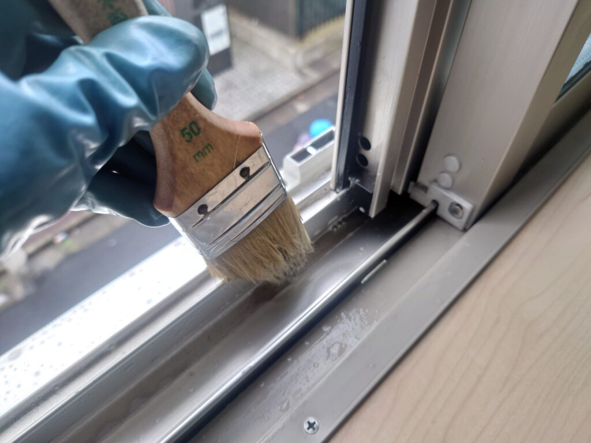
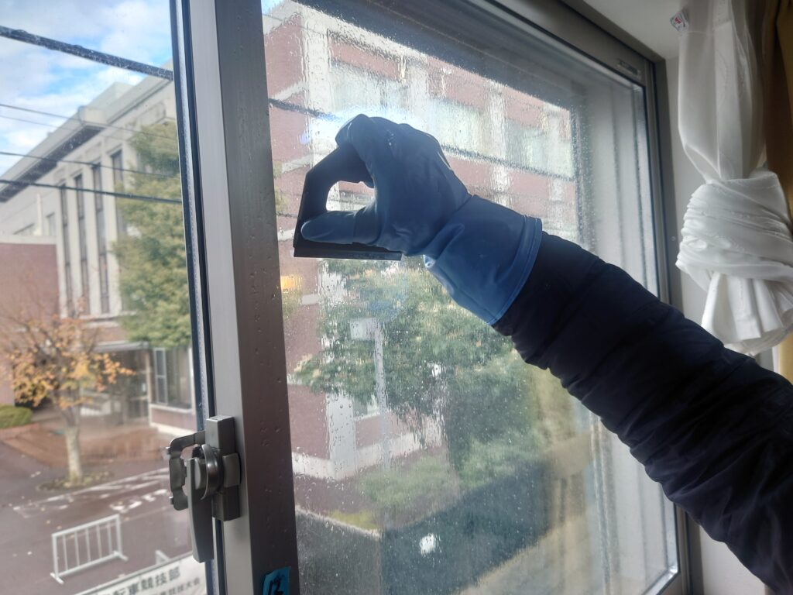
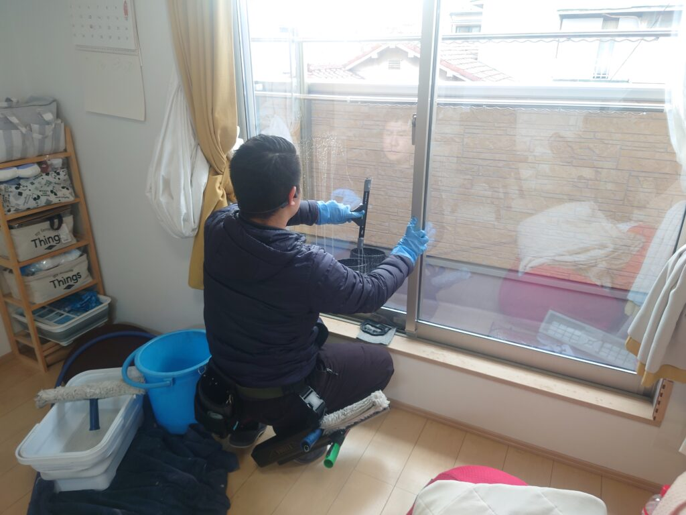

墨田区Ｏ様 窓サッシ網戸クリーニングとガレージ、玄関周辺高圧洗浄クリーニングをしました!
墨田区のＯ様ご自宅の窓とサッシと網戸、ガレージと玄関周辺の高圧洗浄クリーニングを実施しました!Ｏ様には先月に「水回りプレミアムフルセットクリーニング」を実施して頂いて、今月は窓とサッシと網戸、ガレージと玄関周辺のクリーニングをリクエスト頂きました。添付の動画を見て頂くと分かりますが、業務用高圧洗浄機器を用いた高圧洗浄クリーニングは水圧が家庭用の黄色い高圧洗浄機器のパワーとは格段に違います、見る見る堆積汚れが取れてはっきりと綺麗になるのが分かります。窓とサッシと網戸は大中小で合計18枚有りました。全ての網戸をサッシから取外し、高圧洗浄クリーニングで汚れをしっかりと除去して乾燥させます。サッシのクリーニングが1番テクニックと工数が必要なパートになります。サッシの細かい溝に併せて、天然素材の豚毛ブラシ、刷毛を用いて、アルカリ性、漂白系の専用洗剤を適材適所に用いてサッシ特有の堆積汚れ、泥汚れ、埃、カビ汚れを丁寧に、パーフェクトに除去して行きます。窓プロフェッショナルクリーニングは、専用薬剤をドイツ製シャンパーに充分含ませてガラス面に塗布します。これも各窓ガラスの素材（耐火ガラスなど）に合わせて「カッター（ガラス表面の付着堆積物を削り取るプロ工具）」を用いてガラス表面の付着堆積物を丁寧にパーフェクトに除去して行きます。ここの工程をエキスパートがどのくらい高度に出来るかで仕上り具合が大きく異なります。一度カッター処理をした後に、またシャンパーで専用薬剤を塗布します。その後これもドイツ製のスペシャルスクイジーで表面汚れを全て除去処理してピカピカの輝くガラス窓の出来上がりです!18枚の窓ガラス、サッシ、網戸全てに同じプロフェッショナル処理を施して、一枚ずつ仕上げを検査して出来上がりです。とても綺麗な窓空間が現れました!ぜひDAIZENのプロフェッショナル窓クリーニングをご体験下さい！



